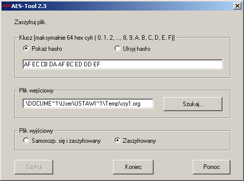

W pakiecie programu CrypTool zawarte jest osobne narzêdzie szyfruj¹ce AES-Tool. Przy u¿yciu tego narzêdzia mo¿liwa jest konwersja dokumentów do samorozpakowuj¹cych archiwów. Archiwa ta zaszyfrowane s¹ przy pomocy algorytmu AES (Rijndael).
Po wybraniu opcji AES_Tool z menu, otwierane jest g³ówne okno narzêdzia.
W tym miejscu mo¿liwe jest wprowadzenie klucza w formie szesnastkowej oraz wybór pliku wyjœciowego. Do wyboru przygotowano dwa ró¿ne formaty: plik zaszyfrowany oraz archiwum samorozpakowuj¹ce. W przypadku pliku zaszyfrowanego, odbiorca potrzebuje narzêdzia AES-Tool aby zdeszyfrowaæ kryptogram. Po wybraniu samorozpakowuj¹cego archiwum do danych do³¹czany jest pe³ny plik wykonywalny. Powoduje to znacz¹cy wzrost rozmiaru archiwum.
Narzêdzie AES-Tool u¿ywane jest do wymiany zaszyfrowanych danych z innymi u¿ytkownikami. Nie zawiera funkcji zarz¹dzaj¹cych kluczami. Klucze musz¹ byæ wymieniane miêdzy u¿ytkownikami przy u¿yciu bezpiecznego kana³u.
Narzêdzie AES-Tool mo¿e byæ u¿ywane niezale¿nie od programu CrypTool. Zarz¹dzane jest za pomoc¹ tych samych postanowieñ licencyjnych z wykluczeniem wszelkich form odpowiedzialnoœci co pakiet CrypTool.
Uwaga 1:
Dokumenty zaszyfrowane za pomoc¹ narzêdzia AES-Tool nie mog¹ byæ zdeszyfrowane za pomoc¹ menu Kryptoanaliza \ Algorytmy symetryczne \ Rijndael.
Odpowiednio, dokumenty zaszyfrowane za pomoc¹ programu CrypTool, u¿ywaj¹c opcji Szyfrowanie \ Symetryczne \ Rijndael (AES) nie mog¹ byæ odszyfrowane za pomoc¹ AES-Tool.
Uwaga 2:
Kiedy AES-Tool zostaje uruchomiony za pomoc¹ menu programu CrypTool Szyfrowanie \ Symetryczne \ AES (samorozpakowuj¹cy), w polu Plik wejœciowy zostanie umieszczona œcie¿ka o nastêpuj¹cej postaci: C:\TEMP\cry7.org (gdzie C:\TEMP jest wartoœci¹ zmiennej œrodowiskowej TEMP, mo¿e tak¿e wyst¹piæ inna liczba ni¿ 7). Plik ten jest kopi¹ dokumentu aktualnie otwartego przez program CrypTool. Zawiera wszystkie manualne modyfikacje dokumentu, nawet te jeszcze nie zachowane.
Uwaga 3:
Algorytm szyfruj¹cy Rijndael u¿ywa bloków d³ugoœci 128 bitów oraz klucza o zmiennej d³ugoœci, tzn. 128, 192 oraz 256 bitów. Klucz wejœciowy zostanie uzupe³niony heksadecymalnymi wartoœciami zera, do najbli¿szej d³ugoœci minimalnej (128, 196 lub 256 bitów).
Nale¿y zauwa¿yæ, ¿e zbyt krótkie klucze postrzegane s¹ jako zagro¿enie bezpieczeñstwa (zobacz okno dialogowe Wpis klucza).
Uwaga 4:
AES-Tool w wersji 2.3 zosta³ pomyœlnie przetestowany jako niezale¿ny program dla plików do d³ugoœci 4 GB.